Cost and latency
Measure where an agent's tokens and time go, then test every cut against the eval, count the cost of each right answer, and run questions at the same time.
Every call has a price
Chapter 32 moved to a cloud model, so every call now costs money, and some took far longer than others. This chapter asks where the money goes, and where the time goes.
Measure each run, then decide what to cut. Some cuts cost more than they save.
Start Ollama, activate the .venv from chapter 05, and work in chapters/33-cost-and-latency/code. The cloud scripts use chapter 32's key and cost under a cent each, and our results are saved.
A Meter on the agent
Meter is a hook. After each model call, it keeps the time and the token counts, and with prices it adds up the cost.
def after_model(self, reply):
seconds = round(self.clock() - self.model_started, 3)
self.steps.append(Step(seconds, reply.tokens_in, reply.tokens_out, reply.tokens_cached))
$ python3 measure_one.py ollama/qwen2.5:7b
ollama/qwen2.5:7b: The initial till float amount is £150. [cash-handling.md]
Call Tokens in Out Cached Seconds
1 249 24 0 0.52
2 492 18 0 1.04
Model 1.56 s, tools 0.07 s, cost $0.000000
$ python3 measure_one.py gemini/gemini-3.1-flash-lite
gemini/gemini-3.1-flash-lite: Each till starts the day with a float of £150. [cash-handling.md]
Call Tokens in Out Cached Seconds
1 173 18 0 34.79
2 413 21 0 1.47
Model 36.26 s, tools 0.10 s, cost $0.000205
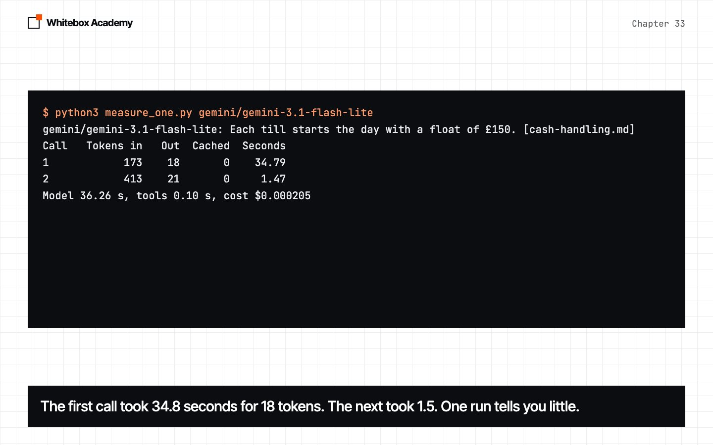
Two calls: one to search, one to answer, and the second reads about twice as much. The cloud model's first call took 34.8 seconds, and its second 1.5. One run tells you little about time.
Where the tokens go
$ python3 where_tokens_go.py ollama/qwen2.5:7b
Call system prompt tool descriptions question tool results model's own turns
1 398 282 47 0 0
2 398 282 47 1,145 45
Share 30% 21% 4% 43% 2%
Characters, not tokens. A token is about four characters of English.
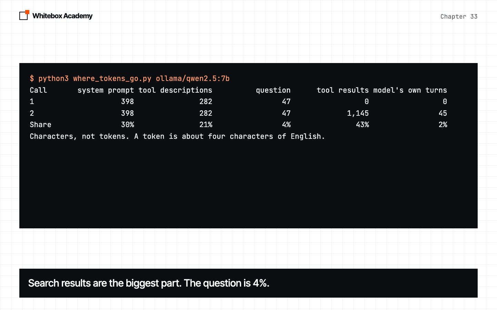
The system prompt and tool descriptions go with every call, unchanged. Across a whole pass of the eval:
$ python3 read_results.py breakdown
Share of everything sent, one pass of 42 questions
system tools question results own turns
qwen2.5:7b 29% 20% 4% 43% 4%
gemini-3.1-flash-lite 17% 12% 2% 65% 3%
system = system prompt, tools = tool descriptions, results = tool results,
own turns = the model's earlier turns
qwen2.5:7b: model 117 s, tools 3 s, of 120 s
gemini-3.1-flash-lite: model 210 s, tools 8 s, of 218 s
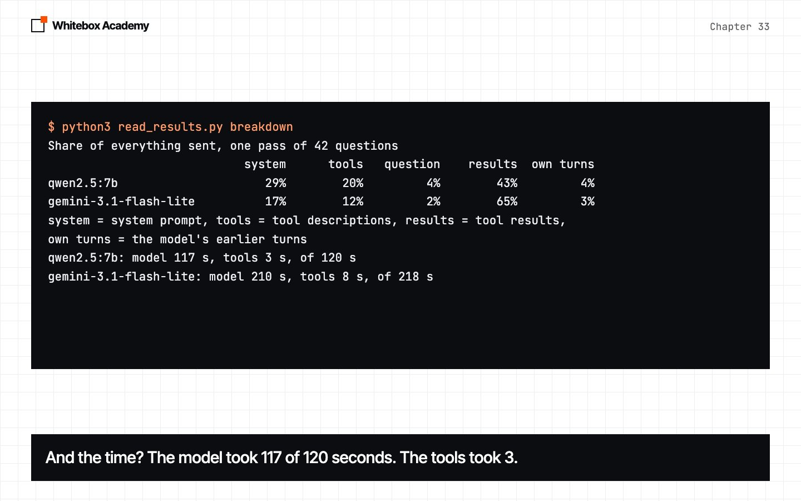
The question is the smallest part. Search results are the biggest. And the model took 117 of 120 seconds, so speeding up the search would save almost nothing.
Send less, and check the score
k is the number of search results, size the words in each chunk. Three passes of the eval on each change:
$ python3 read_results.py less
qwen2.5:7b, three passes of 42. k is search results per search, size is words per chunk
Setup Right Tokens in Seconds
k=3, size 60 112/126 114,520 410
k=1, size 60 99/126 88,495 306
k=5, size 60 108/126 147,019 485
k=3, size 30 101/126 115,096 408
k=3, size 120 113/126 141,743 481
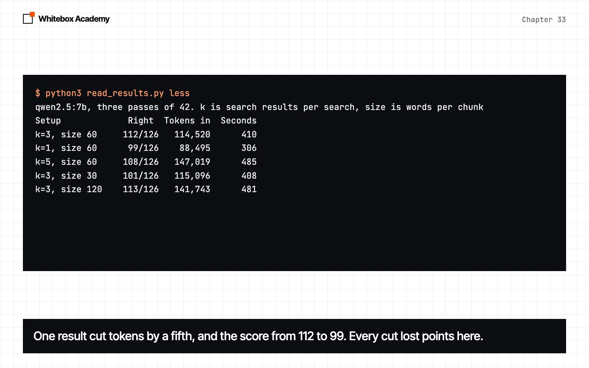
One result cut tokens by about a fifth, and the score from 112 to 99. Every cut lost points. On a paid model, count the cost of each right answer:
$ python3 read_results.py cost
gemini-3.1-flash-lite, one pass of 42, chunks of 60 words
Setup Right Tokens in Cost Per right answer
k=1 38/42 54,227 $0.0184 $0.000484
k=3 41/42 69,845 $0.0218 $0.000532
k=5 42/42 106,631 $0.0311 $0.000740
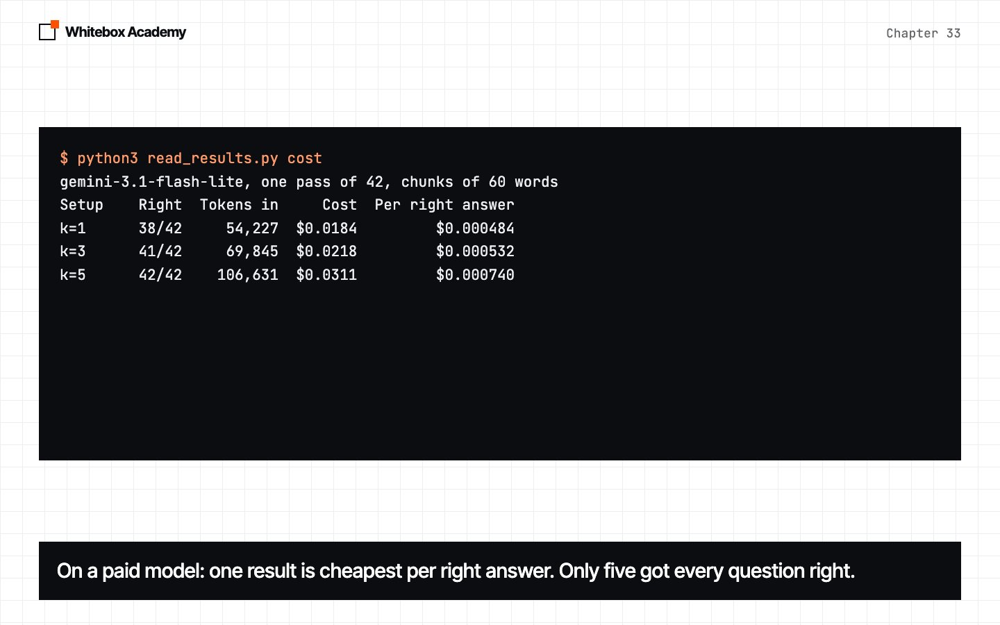
One result is cheapest per right answer. Only five got every question right. The measurement tells you the price of each choice. The choice depends on what a wrong answer costs you.
First words, and the spread
$ python3 first_words.py ollama/qwen2.5:7b
Try First words Whole reply
1 0.21s 1.24s
2 0.02s 1.36s
3 0.03s 0.88s
$ python3 first_words.py gemini/gemini-3.1-flash-lite
Try First words Whole reply
1 1.95s 1.95s
2 2.12s 2.12s
3 1.29s 1.29s
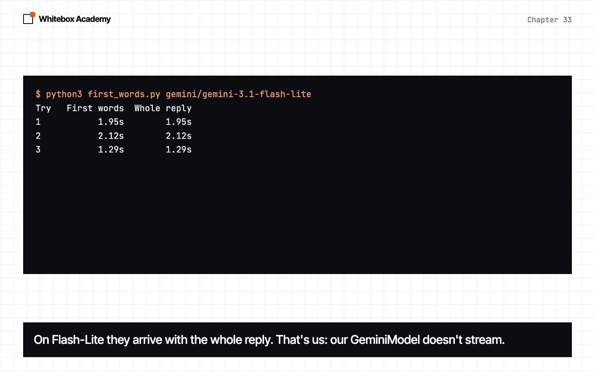
On 7B the first words arrive in a few hundredths of a second. On Flash-Lite they arrive with the whole reply, because chapter 32's GeminiModel doesn't stream. Gemini has a streaming endpoint we didn't write.
$ python3 read_results.py stream
Model First words Whole reply
qwen2.5:7b 1.00s 1.80s
qwen2.5:7b 0.03s 0.86s
qwen2.5:7b 0.03s 1.06s
gemini-3.1-flash-lite 5.77s 5.77s
gemini-3.1-flash-lite 1.68s 1.68s
gemini-3.1-flash-lite 17.47s 17.47s
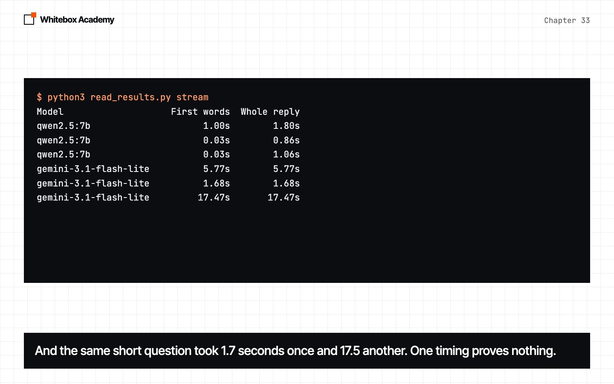
The same short question took 1.7 seconds once and 17.5 another time. One timing proves nothing.
Waiting in parallel
def run_many(make_agent, questions, workers=4):
"""Run each question on its own new agent, several at a time.
Results come back in the order of the questions, whatever order they finish in.
"""
with ThreadPoolExecutor(workers) as pool:
return list(pool.map(lambda question: make_agent().run(question), questions))
Each question gets a new agent, because hooks keep state. Predict: how much faster is eight at once?
$ python3 read_results.py parallel
Model At once Right Seconds
qwen2.5:7b 1 38/42 147
qwen2.5:7b 4 36/42 147
qwen2.5:7b 8 37/42 135
gemini-3.1-flash-lite 1 40/42 447
gemini-3.1-flash-lite 4 41/42 96
gemini-3.1-flash-lite 8 40/42 64
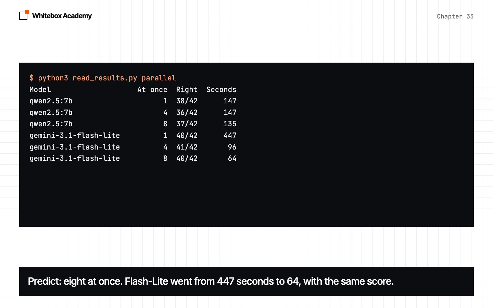
Flash-Lite went from 447 seconds to 64, with the same score. 7B on one Mac barely changed. Running at once saves time, not money, and a provider limits requests per minute.
When it happens
Google can keep the start of a prompt it has just seen, and charge a tenth for it next time. We sent the whole handbook five times:
$ python3 cache_check.py gemini/gemini-3.1-flash-lite
Try Tokens in From cache Cost if none cached Cost
1 4,869 2,033 $0.001231 $0.000773
2 4,869 2,033 $0.001231 $0.000773
3 4,869 2,033 $0.001231 $0.000773
4 4,869 2,033 $0.001231 $0.000773
5 4,869 2,033 $0.001231 $0.000773
Cached input costs a tenth of the normal price on both models here, by Google's pricing page.
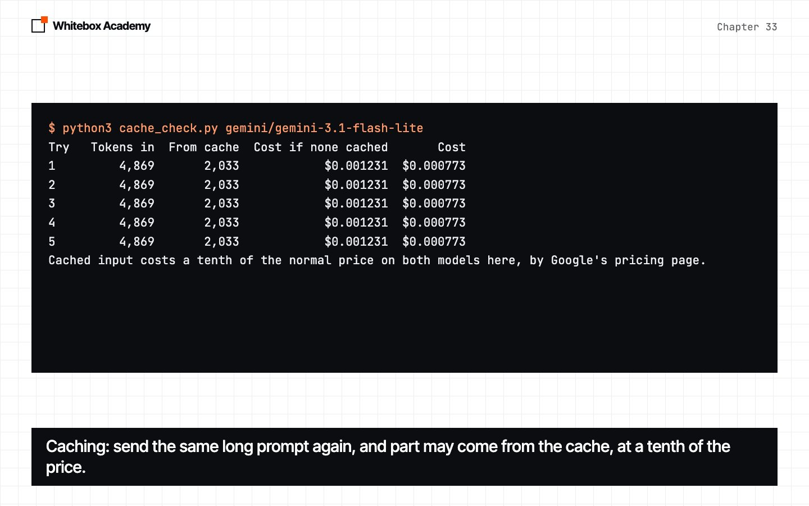
$ python3 cache_check.py gemini/gemini-3.6-flash
Try Tokens in From cache Cost if none cached Cost
1 4,869 0 $0.005309 $0.005309
2 4,869 0 $0.005317 $0.005317
3 4,869 0 $0.005197 $0.005197
4 4,869 0 $0.005298 $0.005298
5 4,869 0 $0.006078 $0.006078
Cached input costs a tenth of the normal price on both models here, by Google's pricing page.
Flash-Lite cached 2,033 tokens a call and charged 37% less. 3.6 Flash cached nothing, every time. Keep the start of your prompts the same, then check tokens_cached: caching helps when it happens, and you can't count on it.
What to cut
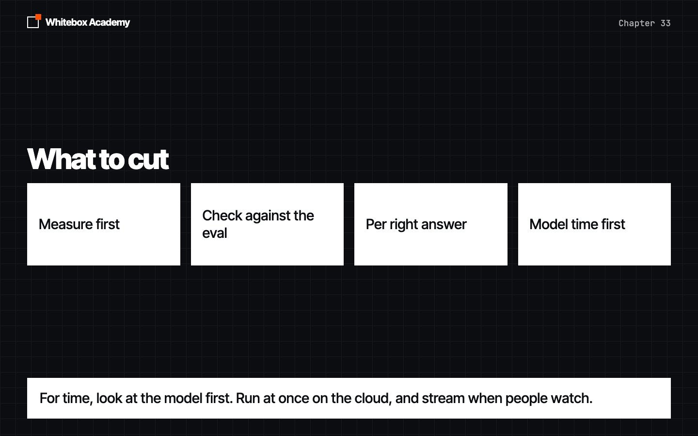
- Measure first. Find the biggest part, in tokens and seconds.
- Check every cut against the eval. A cut that loses points isn't a saving.
- Count cost per right answer, not per call.
- For time, look at the model first. Run at once on the cloud, and stream when people watch.
- Keep the start of every prompt the same, so caching can happen, and check whether it did.
Exercises
Open exercises.py and complete the five TODOs: shares, cost_per_right, cached_cost, ModelTimer and run_all. Then run python3 -m pytest test_exercises.py from that folder. They use a fake model, so there's no key and Ollama doesn't need to run.
$ python3 -m pytest test_exercises.py
FAILED test_exercises.py::test_todo_1_shares - AssertionError: assert None ==...
FAILED test_exercises.py::test_todo_2_cost_per_right - assert None == 0.000484
FAILED test_exercises.py::test_todo_3_cached_cost - assert None == 0.001222
FAILED test_exercises.py::test_todo_4_model_timer - assert [] == [2.5, 1.0]
FAILED test_exercises.py::test_todo_5_run_all - AssertionError: assert None =...
============================== 5 failed in 0.05s ===============================
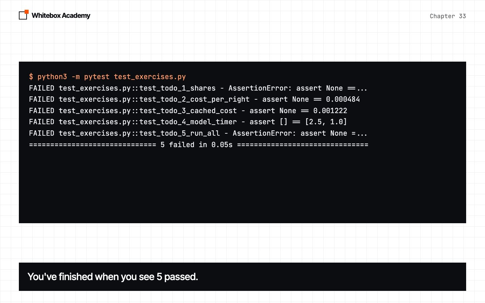
You've finished when you see 5 passed. Worked answers are in solutions/exercises.py.
What you opened
Meterrecords tokens and time for every model call.where_tokens_gosplits what each call sends.- Search results were the biggest part. The question was 2% to 4%.
- The model was 97% of the time on 7B.
- Fewer search results saved about a fifth of the tokens, and lost points.
- Per right answer, one result was cheapest. Only five got every question right.
- Eight at once made the cloud eval about 7 times faster, and did little on one Mac.
- Flash-Lite cached part of a repeated prompt, 3.6 Flash never did.
Measure each run, then decide what to cut.
These counts come from one Mac and Google's API on 8 November 2026, and any of them could change. The sources are listed in the chapter’s README.